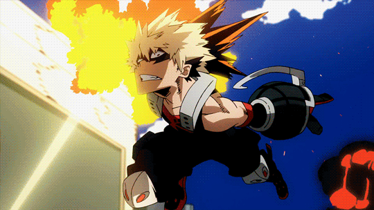

Kohei Horikoshi, autor de My Hero Academia,
el punto mas bajo del manga
Nadie se imagino que este seria un altibajo en el manga.
“Hasta Summer Training Camp, la serie habia mantenido un constante nivel de popularidad, pero en el momento en que adelante que venian villanos, ¡crash! La popularidad cayo repentinamente”, comento el mangaka.

OTRAS NOTICIAS
Jujutsu Kaisen
Fanart muestra la última aparición de Sukuna en el manga
Kimetsu No Yaiba
¿Por qué Inosuke usa una máscara de jabalí?
Shingeki No Kyojin
Fanart muestra una versión hiperrealista del Capitán Levi